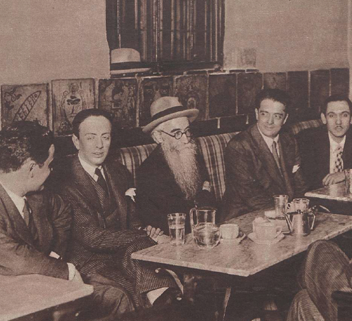
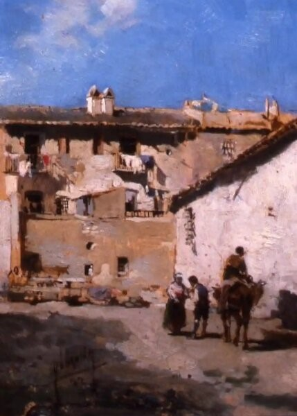
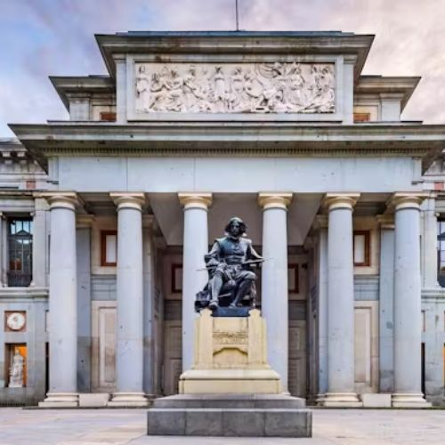
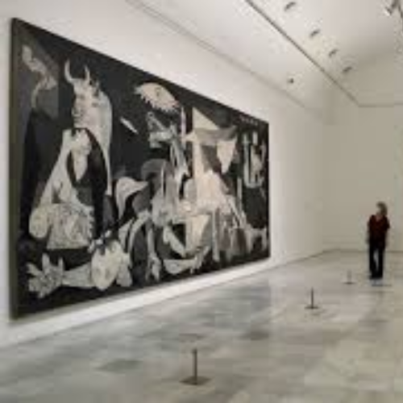
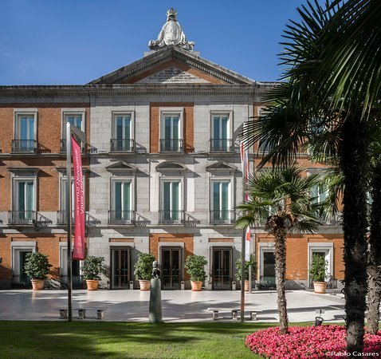

Madrid, capital de Arte.
|  | Sería Miguel Hernandez quien dijera una vez "De entre las piedras, la encina y el haya, de entre un follaje de hueso ligero surte un acero que no se desmaya: surte un acero. Una ciudad dedicada a la brisa, ante las malas pasiones despiertas abre sus puertas como una sonrisa: cierra sus puertas". Madrid ha sido musa de poetas como Neruda o Bennedetti, por sus calles se siente la esencia del arte y cada plaza, cada mirador, es recuerdo vivo de la capital del arte que es y ha sido siempre. La ciudad de Madrid tiene más de 50 museos pero desde Vive Madrid te recomendamos que no te pierdas: |
 |
Oferta artística de Madrid.
| MUSEO NACIONAL DEL PRADO | |
|---|---|
|  | El Museo Nacional del Prado desde que fue inaugurado en 1819 y a lo largo de su historia centenaria, ha cumplido con la alta misión de conservar, exponer y enriquecer el conjunto de las colecciones y obras de arte que, estrechamente vinculadas a la historia de España, constituyen una de las más elevadas manifestaciones de expresión artística de reconocido valor universal. El Museo Nacional del Prado es uno de los lugares más populares y reconocidos en el mundo del arte, con 3 millones de visitantes anuales y una presencia online que supera los 10 millones. El edificio que hoy sirve de sede al Museo Nacional del Prado fue diseñado por el arquitecto Juan de Villanueva en 1785, como Gabinete de Ciencias Naturales, por orden de Carlos III. No obstante, el destino final de esta construcción no estaría claro hasta que su nieto Fernando VII, impulsado por su esposa la reina María Isabel de Braganza. --Consigue tus entradas aqui-- |
| MUSEO NACIONAL REINA SOFÍA | |
|---|---|
| La apertura del Museo Nacional Centro de Arte Reina Sofía en 1990 supuso la creación de un museo de arte moderno y contemporáneo en España de nivel internacional, aunque no han sido pocos los avatares sufridos por el edificio hasta alcanzar tal fin. Su primer germen fue la incorporación de los fondos del Museo Español de Arte Contemporáneo, creado en 1894 y desaparecido en 1988. Este contaba con obras premiadas en las Exposiciones Nacionales de Bellas Artes y en el concurso de la Academia de España en Roma, así como con piezas representativas de las vanguardias, provenientes de donaciones y daciones en concepto de pago de impuestos como las realizadas, respectivamente, por los herederos de Julio González (1973) y de Joan Miró (1985). A este primer aporte se unieron los fondos de arte del siglo XX del Museo Nacional del Prado, que contaba con una destacable colección de pintura cubista cedida por el historiador Douglas Cooper. A posteriores donaciones (como las formadas por obras de Le Corbusier en 1988 o Lucio Fontana en 1991) se unió en 1992 el legado Dalí, otorgado por testamento, que completo un capítulo fundamental en la representación de las vanguardias; ese mismo año, el traslado del Guernica de Pablo Picasso dio a la Colección la piedra angular sobre la que bascularía en adelante el discurso museológico. ~~Amplia información y consigue tus entradas aqui~~ |
 |
| MUSEO FUNDACIÓN TYSSEN BORNEMISZA | |
|---|---|
|  |
El Museo Thyssen-Bornemisza, fue fundado en 1992 gracias a la donación de la colección privada de la familia Thyssen-Bornemisza al Estado español. Su objetivo es ofrecer una visión amplia de la historia del arte desde el Renacimiento hasta el siglo XX.
Entre los puntos de interés destacan su variada colección, que incluye obras de maestros como Van Gogh, Rembrandt y Monet, así como su excepcional representación del arte estadounidense del siglo XX. Además, el museo se encuentra en el emblemático Palacio de Villahermosa, un atractivo arquitectónico en sí mismo. Las obras más representativas incluyen "La familia de Carlos IV" de Goya, "La mujer en el espejo" de Velázquez y "El retrato de un hombre joven" de Rafael. Estos tesoros artísticos hacen del Thyssen un lugar imprescindible para los amantes del arte. --Planifica aquí tu visita-- |
 +34 915 787 810 +34 915 787 810 |
 turismo@esmadrid.com turismo@esmadrid.com |
 @visita_madrid @visita_madrid |